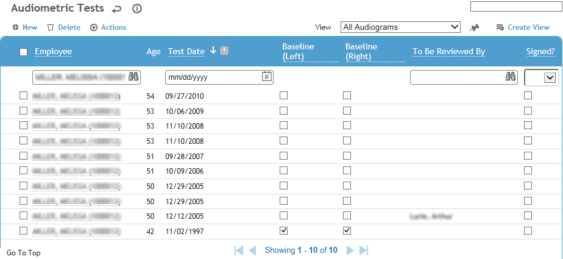
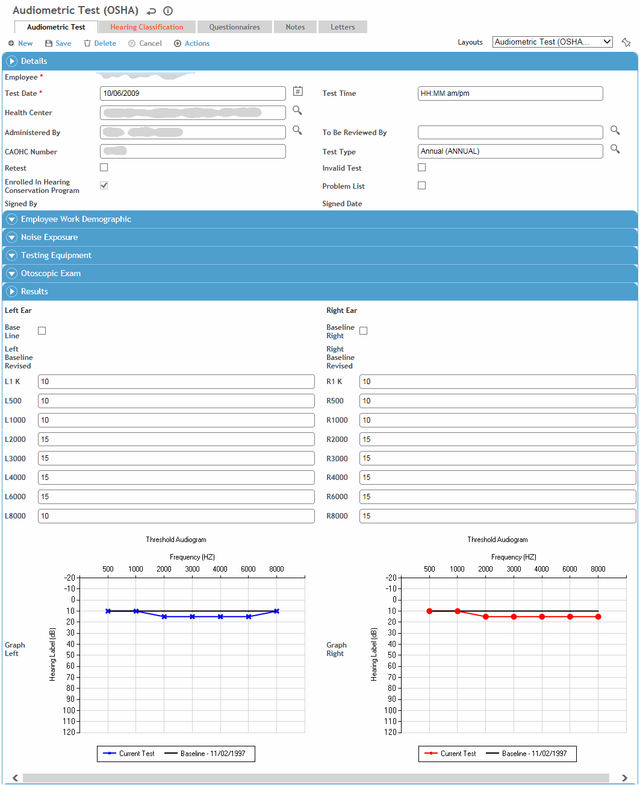
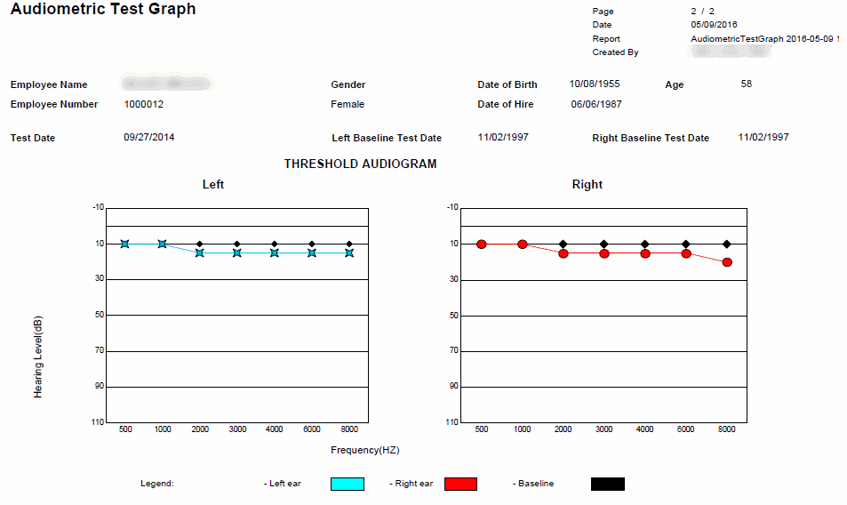

The audiometric test module stores test results, information about the employee’s exposure and questionnaire responses.
In the Occupational Health menu, click Audiometric and use the search list to select an employee.

Click a link to view details of a previous visit, or click New to enter new test results for the employee.

On the Audiometric Test tab, enter information about the test in the Details section:
The date and time of testing, the health center where the test was performed, the person who administered the test, the test type (e.g. annual, retest) and the person who reviewed the results.
Only the user identified as the reviewer can sign the record (choose Actions»Sign). A signed record is locked from further edits.
If the employee belongs to a Hearing Conservation Similar Exposure Group (SEG), the Enrolled in Hearing Conservation Program checkbox is selected. This checkbox is display only, and cannot be changed manually. If you want to add the employee to a Hearing Conservation SEG, choose Actions»Add to Hearing SEG. If more than one SEG is classified (in the ExposureGroup look-up table) as a Hearing Conservation SEG, you will be prompted to choose the appropriate one. The start date will be the same as the audiometric test date.
Indicate if the restriction is to appear on the Problem List (see Working with the Problem List).
Enter information about the Results:
If the exam included an Otoscopic Exam, identify whether it was performed on the left and/or right ear, and add any related notes.
Enter the test results for each ear, or enter “NR” if there was no response. “NR” values transferred from an audiometer can be automatically converted to another value, if defined in the system settings. (Note that Cority cannot calculate a shift or average if no response is entered in results fields. For more information, see How Test Results are Calculated and Displayed.)
Indicate for each ear if the test is a Baseline.
When the results are saved, the values are plotted on a graph for each ear.
Review the Calculations/Interpretations section.
For OSHA standards:
If the test results are confirmed STS (Standard Threshold Shift), select the appropriate checkbox. A confirmed STS occurs when the results of a second test confirm the results of the first. The STS and ORS (OSHA Recordable Shift) fields are not applicable for users in the UK. If a shift is detected for one or both ears but the Confirmed STS checkbox is not selected, you are prompted to confirm the shift.
If there was hearing loss, select the loss type: conductive or sensorineural (or NIHL, if using South Africa regulations).
Invalid tests are excluded from all reports except the Audiometric Employee Hearing Summary report.
Record the employee’s level of Noise Exposure:
If the employee was noise free prior to the test, select Noise Free Prior; otherwise, select Exposed to Noise and enter the noise level and the date of the Last Noise Exposure Assessment, if applicable. Depending on your system settings, this date may be displayed automatically from the IH module. For more information, see Changing Your System Settings.
Identify the type and brand of hearing protection worn, and the duration of employee’s exposure. Depending on your selection, the Noise Reduction Rating (NRR) is displayed from the AudiometricProtection table. The effective exposure is automatically calculated based on the data you enter.
Enter the background ambient noise level.
To view adjusted noise exposure for employees working extended shifts, add the Exposed Level Adjusted field to your layout, and ensure the Display Noise Date system setting is enabled. This field will display the employee’s most recent Primary LAeq8(Adjusted-dBA) results from the corresponding IH noise sample record.
Indicate if a Recall is necessary and enter the recall date and if necessary, the name of another health care service or practitioner to refer test results to. If you use the Appointments/Scheduling module to include recalls for audiograms as part of your regular surveillance groups, you can ignore these recall fields.
Record information about the Testing Equipment.
The example above shows results using OSHA Regulations. For information about how test results are calculated and displayed, see How Test Results are Calculated and Displayed.
To view the current test results graphically, choose Actions»Graph. If the test you selected is the only (or first) test baseline it will be graphically represented by itself. If there are multiple baselines, it will be graphed in comparison to the previous baseline.
Two graphs are shown side by side, one each for left and the right ear. The baseline test results are shown in black and the current results in blue or red for the left and right ear respectively.

The Hearing Classifications tab shows the results of comparisons against the regulation standard used (Alberta, OSHA, Quebec, or UK); these can be included in letters. For more information, see How Test Results are Calculated and Displayed.
The Questionnaires tab allows you to associate questionnaires with a record. For information about creating and administering questionnaires, see Questionnaires.
The Notes tab allows you to record additional information that does not fit elsewhere in the form. For more information, see Adding Notes to a Form.
Use the Documents tab to link an external file to the record to provide easy access to the file (for more information, see Linking or Importing a Document).
The Letters tab allows you to view past letters or generate new letters to employees. Form letters are stored in the LettersTemplate look-up table. For information about creating letters, see Generating a Letter. When you generate a letter, the Employee Letter Generated checkbox on the Audiometric Test tab is selected automatically.
Instead of opening individual records to print employee letters, you can use the Audiometric Employee Letters report to generate letters for multiple employees at the same time; if you save the letters when prompted, the Employee Letter Generated checkbox for each record is automatically selected so that the letter will only be sent once.
If you are using OSHA standards, choose Actions»Generate Letter to generate an employee notification letter with a graphic representation of the current hearing results. Depending on the hearing results, the appropriate letter is created using the letter template defined in the system settings (see Changing Your System Settings). For example, if the result is STS/Confirmed STS but not ORS/Confirmed ORS, the STS letter will be used; if the result is ORS/Confirmed ORS, the ORS letter will be used. If the result is not an STS/Confirmed STS nor ORS/Confirmed ORS, the Normal letter will be used. The generated letter is added to the Letters tab.
If you are using other standards, or to create additional letters, use the Letters tab as described in Generating a Letter. Form letters are defined in the LettersTemplate look-up table.